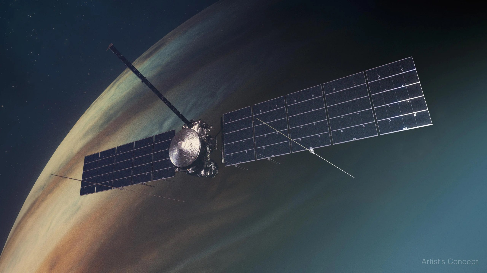

NASA's Latest Adventure: The Europa Clipper Mission
NASA's Europa Clipper mission is set to explore Jupiter's moon Europa, which is believed to have a vast ocean beneath its icy surface. The mission aims to investigate whether the moon could harbor conditions suitable for life.
The spacecraft will conduct detailed reconnaissance of Europa's ice shell and subsurface ocean, providing key insights into the moon's geology, composition, and potential habitability.